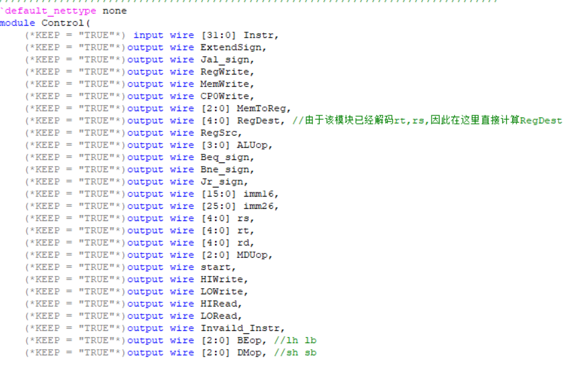

MIPS微系统设计注意事项
这是一篇针对计组P8的一些注意事项
写在开头
如果大家是以P8课下的身份来到这个，笔者首先恭喜大家来到P8，计组实验最终回。
P8，是笔者认为debug de起来最痛苦的一个Project,没有之一。这是因为P8作为板级验证的Project，是最接近硬件的一个Project,而硬件Bug一般是难以定位的。
不可综合
在Verilog中，有很多语句是不可综合的，我们在P8要避免出现这种情况。
注意事项
（1）不使用initial。
（2）不使用#10。
（3）不使用循环次数不确定的循环语句，如forever、while等。
（4）不使用用户自定义原语（UDP元件）。
（5）尽量使用同步方式设计电路。
（6）除非是关键路径的设计，一般不采用调用门级元件来描述设计的方法，建议采用行为语句来完成设计。
（7）用always过程块描述组合逻辑，应在敏感信号列表中列出所有的输入信号。
（8）所有的内部寄存器都应该能够被复位，在使用FPGA实现设计时，应尽量使用器件的全局复位端作为系统总的复位。
（9）对时序逻辑描述和建模，应尽量使用非阻塞赋值方式。对组合逻辑描述和建模，既可以用阻塞赋值，也可以用非阻塞赋值。但在同一个过程块中，最好不要同时用阻塞赋值和非阻塞赋值。
（10）不能在一个以上的always过程块中对同一个变量赋值。而对同一个赋值对象不能既使用阻塞式赋值，又使用非阻塞式赋值。
（11）如果不打算把变量推导成锁存器，那么必须在if语句或case语句的所有条件分支中都对变量明确地赋值。
（12）避免混合使用上升沿和下降沿触发的触发器。
（13）同一个变量的赋值不能受多个时钟控制，也不能受两种不同的时钟条件（或者不同的时钟沿）控制。
（14）避免在case语句的分支项中使用x值或z值。
不可综合语句
（1）initial
只能在test bench中使用，不能综合。
（2）events
event在同步test bench时更有用，不能综合。
（3）real
不支持real数据类型的综合。
（4）time
不支持time数据类型的综合。
（5）force 和release
不支持force和release的综合。
(6）assign 和deassign
不支持对reg 数据类型的assign或deassign进行综合，支持对wire数据类型的assign或deassign进行综合。
(7) fork join
不可综合，可以使用非块语句达到同样的效果。
(8) primitives
支持门级原语的综合，不支持非门级原语的综合。
(9) table
不支持UDP 和table的综合。
(10) 敏感列表里同时带有posedge和negedge
如：always @(posedge clk or negedge clk) begin…end
这个always块不可综合。
(11) 同一个reg变量被多个always块驱动
(12) 延时
以#开头的延时不可综合成硬件电路延时，综合工具会忽略所有延时代码，但不会报错。
如：a=#10 b;
这里的#10是用于仿真时的延时，在综合的时候综合工具会忽略它。也就是说，在综合的时候上式等同于a=b;
(13) 与X、Z的比较
可能会有人喜欢在条件表达式中把数据和X(或Z)进行比较，殊不知这是不可综合的，综合工具同样会忽略。所以要确保信号只有两个状态：0或1。
文末
以上转载自https://zhuanlan.zhihu.com/p/146034068 ，侵删
回显少值
本来是4个5，但回显只有3个5，有时候有4个5，这个bug也是比较难以处理，经过对于UART_tx和UART_rx的研究，意识到丢5的可能性只能在于我原先的设计中，命令UART_tx发送的开始信号只有一周期，不管UART_tx什么状态，所以可能出现UART_tx不处于IDLE状态而给UART_tx一个开始信号，这时候这个开始信号将被忽略，导致本次发送被忽略，所以更改代码，利用UART_avi信号，开始信号将一直置高，直到UART_avi有效，这时候可以表明这个开始信号一定会被接收，所以可以放心置0，解决了这个问题。
强制板子下线
（然后这个板子就会消失在可选列表中10-15分钟不等）
注意，此种现象的发生并非网络问题，而是源于串口短时间内回显大量数据，炸掉了串口缓冲区导致的板子崩溃下线，之所以发生这个问题是由于，Req处理的不合理导致的，如图：
仔细观察，会发现D_PC为0x4180时，会出现两条指令，若前面那条指令没有在D级执行的操作，则无需考虑，反正到E级时候会被清掉，但若此指令如图中一般是在D级就有操作的beq指令，则该beq仍会执行，而众所周知beq的跳转其实只是相对位置，所以他会在0x4180上进行错误跳转，导致程序出错，为了解决这个问题，我同样同步化了Req信号用来控制ID_Instr_Real，代码如下：1
2
3
4
5
6
7
8
9
10
11
12
13
14
15
16
17
18
19
20
21
22
23
24
25
26
27
28
29
30
31 reg Delay_Stall_sign;
reg Delay_Req_sign;
always @(posedge clk) begin
if(reset||Req) begin
Delay_Stall_sign <= 1'b0;
Delay_Req_sign <= 1'b1;
ID_Instr_MEM <= 32'd0;
end
else if(Stall_sign) begin
if(Delay_Stall_sign) begin
ID_Instr_MEM <= ID_Instr_MEM;
end
else begin
ID_Instr_MEM <= ID_Instr_Wire;
end
Delay_Stall_sign <= 1'b1;
end
else begin
ID_Instr_MEM <= ID_Instr_Wire;
Delay_Stall_sign <= 1'b0;
Delay_Req_sign <= 1'b0;
end
end
wire [31:0] ID_Instr_Wire;
reg [31:0] ID_Instr_MEM;
assign ID_Instr_Wire = F_Instr;
assign ID_Instr_Real = (F_PC == 32'h3000 || Delay_Req_sign) ? 32'd0 :
(Delay_Stall_sign) ? ID_Instr_MEM : ID_Instr_Wire;
解决后如图，在进入异常处理程序时，第一个错误指令将被抹除，变为32'd0：
回显异常和计时器异常冲突
在实现计时器功能时，若采用TC模块，则不得不考虑一个问题，由于UART回显必须全过程支持，所以回显通过异常实现，当接受完毕时，UART模块产生中断信号执行回显指令，但TC也会在每一秒产生中断信号，在异常处理程序中实现计数减1，输出到数码管等工作，但异常程序入口只有一个，那就是0x4180，若不做处理，则不管谁发出中断信号，两个中断处理程序都将处理一遍，那么现在就需要一个信号甄别这个中断到底是谁引起的，环顾CP0，发现没有这种信号，唯一有可能的HWINT是每周期都会更新，根本来不及接受它的值，所以，我对CP0进行了魔改，将HWINT转变为了只会在进入异常程序时更新，这样，我们可以通过Cause寄存器哪一位置为1找出当前中断是谁引起的，用beq进行区分，防止中断进行互相干扰，有了区分的数据，我们的问题便得到了解决。
接入乘除法器与外设驱动模块注意事项
接入乘除法器
删去原有的MDU中乘除执行语句，主要是包含““与“/”的语句，因为他们不可综合，之后将教程所给的乘除按E_MDU->MulDivUnit->MulUnit和*E_MDU->MulDivUnit->DivUnit的结构生成模块并复制导入，如图：
之后则根据接口进行连线，将顶层MulDivUnit所需信号在E_MDU生成接入即可，如图：
连线的时候其实无需做太大的改动，只需意识到原来乘法除法语句让MulDivUnit模块执行，相当于一个等价替换，即可做最小的改动。
接入外设驱动模块
P7已经做下了很好的铺垫，只需继续在系统桥上添加新接口即可，如图：
我们要做的不过是延长代码,但事情显然不会这么简单，注意到DM也是接在Bridge上的，但DM已经今非昔比，它变成了一个时序模块，即需要Clk信号，
在上升沿才能读出数据，如果只是按原来的处理，其余外设正常工作，DM会出问题，因为他的读已经区别于了其他模块，为了消除这种区别，我直接将所有的模块读全部变为了同步读。实现如下：1
2
3
4
5
6
7
8
9
10
11
12
13
14
15
16
17
18
19
20
21
22
23
24
25
26
27
28
29
30
31
32 always @(posedge clk) begin
if(reset) begin
TC1_RD_S <= 0;
UART_RD_S <= 0;
Digital_Tube_RD_S <= 0;
Switch_RD_S <= 0;
User_Key_RD_S <= 0;
LED_RD_S <= 0;
HitTC1_S <= 1'b0;
HitDM_S <= 1'b0;
HitUART_S <= 1'b0;
HitDigital_S <= 1'b0;
HitSwitch_S <= 1'b0;
HitUserKey_S <= 1'b0;
HitLED_S <= 1'b0;
end
else begin
TC1_RD_S <= TC1_RD;
UART_RD_S <= UART_RD;
Digital_Tube_RD_S <= Digital_Tube_RD;
Switch_RD_S <= Switch_RD;
User_Key_RD_S <= User_Key_RD;
LED_RD_S <= LED_RD;
HitTC1_S <= HitTC1;
HitDM_S <= HitDM;
HitUART_S <= HitUART;
HitDigital_S <= HitDigital;
HitSwitch_S <= HitSwitch;
HitUserKey_S <= HitUserKey;
HitLED_S <= HitLED;
end
end
我将所有HitXX信号都存了一周期，将除了DM的读出数据都存了一周期，让本来在上一周期读出的数据读出在了下一周期，这样人为的将除了DM之外的外设变成了同步读，和DM行为同步，保证了系统桥稳定正确工作。
唯一特殊的就是UART，但类似于MDU的处理，生成了UART->UART_TX和UART->UART_RX的结构，连线在UART完成，即可归一化解决UART的问题。如图：
优化技巧
1.拒绝过度优化
如果实在是害怕优化使得CPU功能出现错误，可以加入(*KEEP = “TRUE”*)在寄存器，wire前面，则综合时不管这个寄存器或者线路多没用，综合器也不会将其优化掉。

2.调教（bushi)ISE

如上所示，右键XST将优化调整如上可以保留层次结构，避免一些不同层次相同命名去掉层次结构时可能引起的冲突问题。
自动生成IP核可用.coe文件
这是一个用Python实现的小玩意，运行此程序可以将同一目录下的test.asm转换成IP核可用的test.coe，且直接存放到ipcore_dir目录下，便于选择。
使用方法
更改dir_name_3目录为自己CPU的ipcore_dir即可
代码呈现
1 | import difflib |
Mar代码
2022年P8要求实现功能：在一个Mars文件中同时实现计算器，计时器并全程带有串口回显功能。代码如下：1
2
3
4
5
6
7
8
9
10
11
12
13
14
15
16
17
18
19
20
21
22
23
24
25
26
27
28
29
30
31
32
33
34
35
36
37
38
39
40
41
42
43
44
45
46
47
48
49
50
51
52
53
54
55
56
57
58
59
60
61
62
63
64
65
66
67
68
69
70
71
72
73
74
75
76
77
78
79
80
81
82
83
84
85
86
87
88
89
90
91
92
93
94
95
96
97
98
99
100
101
102
103
104
105
106
107
108
109
110
111
112
113
114
115
116
117
118
119
120
121
122
123
124
125
126
127
128
129
130
131
132
133
134
135
136
137
138
139
140
141
142
143
144
145
146
147
148
149
150
151
152
153
154
155
156
157
158
159
160
161
162
163
164
165
166
167
168
169
170
171
172
173
174
175
176
177
178
179
180
181
182
183
184
185
186
187
188
189
190
191
192
193
194
195
196
197
198
199
200
201
202
203
204
205
206
207
208
209
210
211
212
213
214
215
216
217
218
219
220
221
222#PC 初始值 0x3000
#异常中断入口 0x4180
#数据存储器 0x0000 - 0x2FFF
#指令存储器 0x3000 - 0x6FFF
#定时器 0x7F00 - 0x7F0B
#UART 0x7F30 - 0x7F3F
#数码管 0x7F50 - 0x7F57
#拨码开关 0x7F60 - 0x7F67
#按键开关 0x7F68 - 0x7F6B
#LED 0x7F70 - 0x7F73
.text
#打开中断
ori $t1,0x1100
sw $t1,0x7F70($0)
nop
ori $t3,0XFC01
mtc0 $t3,$12
#模式切换
lw $s3,0x7F68($0)
andi $s6,$s3,3
li $s0,1
li $s1,2
bne $s6,$s0,cal
nop
tim:
#计时器模式
li $t7,0
li $t3,25000000 #配置1s
sw $t3,0x7F04($0) #配置1s
li $t3,0xB #配置计时器
sw $t3,0x7F00($0) #配置计时器
lw $s4,0x7F60($0) #读入计时数据
move $t4,$s4 #复制计时数据
andi $s7,$s3,4
beq $s7,$0,Adda_1
nop
#减法最大数
Suba_1:
sw $s4,0x7F50($0)
jal wait
nop
#加法最大数
Adda_1:
sw $0,0x7F50($0)
jal wait
nop
#判断初值是否改变
Judge:
lw $s7,0x7F60($0)
beq $s7,$s4,wait
nop
jal tim
nop
#等待中断
wait:
beq $0,$0,wait
nop
#计时结束
jal end_time
nop
#结束标志
end_time:
ori $t1,$0,1
sw $t1,0x7F70($0)
nop
#结尾循环
end_1:beq $0,$0,end_1
nop
cal:
bne $s6,$s1,end
nop
#计算器模式
calc:
andi $s6,$s3,0XFC
addu $a1,$s6,$0
lw $t1,0x7F64($0)
lw $t2,0x7F60($0)
#加
addd:
li $a0,4
bne $s6,$a0,subb
nop
addu $t3,$t1,$t2
jal output
nop
#减
subb:
li $a0,8
bne $s6,$a0,multt
nop
subu $t3,$t1,$t2
jal output
nop
#乘
multt:
li $a0,16
bne $s6,$a0,divv
nop
mult $t1,$t2
mflo $t3
jal output
nop
#除
divv:
li $a0,32
bne $s6,$a0,andd
nop
div $t1,$t2
mflo $t3
jal output
nop
#与
andd:
li $a0,64
bne $s6,$a0,orr
nop
and $t3,$t1,$t2
jal output
nop
#或
orr:
li $a0,128
bne $s6,$a0,end_cal
nop
or $t3,$t1,$t2
jal output
nop
#输出结果
output:
sw $t3,0x7F50($0)
#计算结束
end_cal:
lw $s3,0x7F68($0)
andi $s6,$s3,0XFC
beq $s6,$a1,nochange
nop
beq $s6,$0,nochange
nop
jal calc
nop
nochange:
beq $0,$0,end_cal
nop
#全程序结束
end:
beq $0,$0,end
nop
.ktext 0x4180 #魔改CP0 INT
#判断异常类型
mfc0 $s5,$13
andi $s5,$s5,0x400
beq $s5,$0,UART
nop
#计时模块
Timing:
#回退检测
mfc0 $k0,$14
addi $k0,$k0,-20
mtc0 $k0,$14
#判断增减
andi $s7,$s3,4
beq $s7,$0,Adda
nop
#减
Suba:
sub $t4,$t4,$s0
sw $t4,0x7F50($0)
beq $t4,$0,endtime
nop
jal Endhandler
nop
#增
Adda:
addi $t7,$t7,1
sw $t7,0x7F50($0)
beq $t7,$s4,endtime
nop
jal Endhandler
nop
#计时结束
endtime:
sw $0,0x7F00($0)
mfc0 $k0,$14
addi $k0,$k0,24
mtc0 $k0,$14
jal Endhandler
nop
#回显模块
UART:
lw $a2,0x7F30($0)
sw $a2 0x7F30($0)
Endhandler:
nop
nop
eret
写在最后
更多信息查看我的Github仓库-> https://github.com/ForeverYolo/2022-BUAA-CO/tree/main/P8
这是最后一个Project,相信走到这里的各位一定都很有所感触，笔者在这里祝大家武运昌隆！